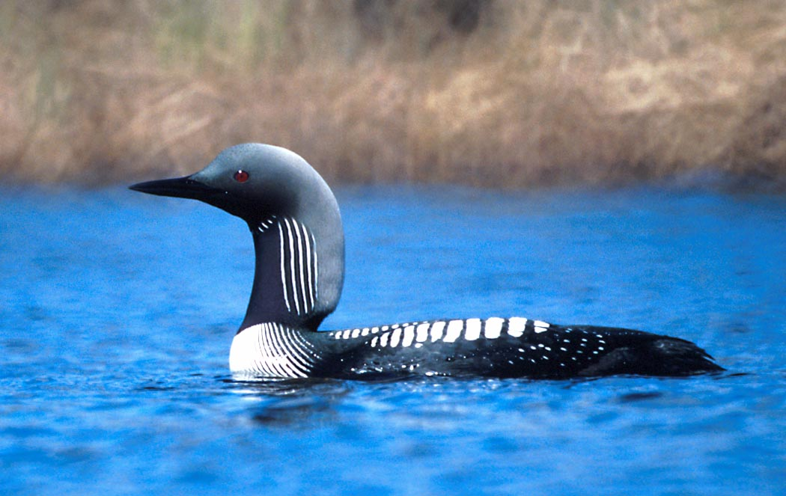
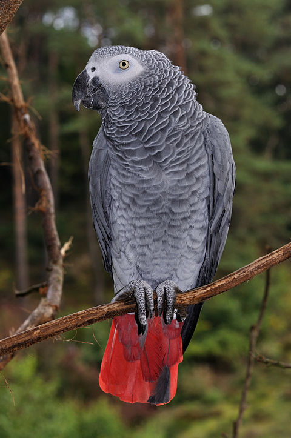

La especialidad de la zoología que estudia específicamente a las aves se denomina ornitología. Las aves son animales vertebrados, de sangre caliente, que caminan, saltan o se mantienen solo sobre las extremidades posteriores, mientras que las extremidades anteriores han evolucionado hasta convertirse en alas que, al igual que muchas otras características anatómicas únicas, les permiten, en la mayoría de los casos, volar, si bien no todas vuelan. Tienen el cuerpo cubierto de plumas y, las aves sensu stricto, un pico córneo sin dientes. Para reproducirse ponen huevos que incuban hasta su eclosión. Las aves habitan en todos los biomas terrestres[1] y también en todos los océanos. Su tamaño puede ser desde 6,4 cm en el colibrí zunzuncito hasta 2,74 metros en el avestruz. Los comportamientos son diversos y notables, como en la anidación, la alimentación de las crías, las migraciones, el apareamiento y la tendencia a la asociación en grupos. La comunicación entre las aves es variable y puede implicar señales visuales, llamadas y cantos. Algunas emiten gran diversidad de sonidos y destacan por su inteligencia y por la capacidad de transmisión cultural de conocimientos a nuevas generaciones.
Los paleognatos (Palaeognathae, que en griego significa "mandíbulas antiguas") es un clado de aves pertenecientes al grupo Neornithes (aves modernas), que está representado por más de 50 especies con una distribución predominantemente en el hemisferio sur. Palaeognathae es dividido tradicionalmente en dos linajes compuesto por los tinamúes y las ratites, los cuales comparten una compleja estructura ósea en la mandíbula superior denominada paladar paleognato. Mientras los tinamúes son el único clado de paleognatos que no han perdido la capacidad de volar, las ratites presentan un esternón plano, sin quilla (en la quilla se insertan los músculos para volar que estas aves no necesitan). Las ratites se distribuyen en Nueva Zelanda (kiwis), África (avestruz), América (ñandúes) y en Australia y la isla de Nueva Guinea (emú y casuarios). Por otra parte, los tinamués son endémicos del Neotrópico (Sudamérica y Centroamérica).


| Nombre Científico | Nombre Común | Habitat | Extinta |
|---|---|---|---|
| S.c. Australis | Avestruz de cuello azul | Africa Austral | NO |
| S.c. Camelus | Avestruz de cuello rojo | Norte de África | NO |
| S.c. Massaicus | Avestruz masái | Sur Kenia | NO |
| S.c. Syriacus | Avestruz arábiga | Desierto Sirio | SI |
Aequornithes es un clado de aves fundamentalmente acuáticas, siendo la monofilia del grupo sustentada por varios estudios filogenéticos moleculares. El grupo incluye a los clados Gaviiformes, Sphenisciformes, Procellariiformes, Ciconiiformes, Suliformes y Pelecaniformes. Por otra parte, no incluye a otras aves acuáticas que no están relacionadas con este grupo, tales como Mirandornithes (flamencos y somormujos). Charadriiformes y Anseriformes.

Australaves es un clado de aves recientemente definido, el cual consiste en Eufalconimorphae (paseriformes, loros y halcones), así como el orden Cariamiformes (incluidas las seriemas y las extintas aves del terror). Parecen ser el grupo hermano de Afroaves. Como en el caso de Afroaves, los clados más basales tienen miembros depredadores, lo que sugiere que este era el estilo de vida ancestral. Sin embargo, algunos investigadores son escépticos de esta evaluación, ya que algunos representantes extintos del grupo, como Strigogyps, llevaban otro estilo de vida.Sin embargo, los loros y halcones más primitivos eran vagamente como los cuervos y probablemente eran omnívoros.
